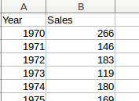
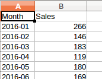
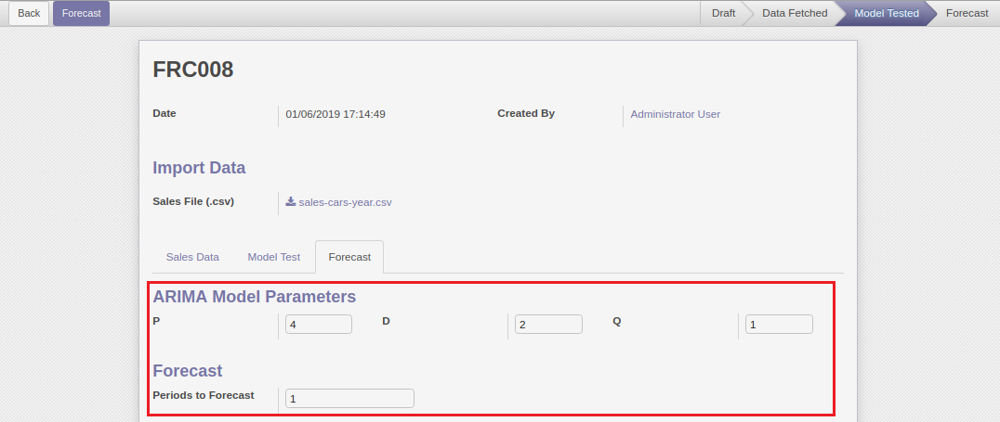
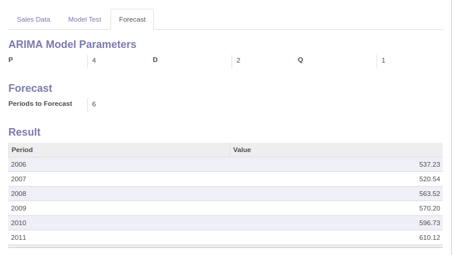

Odoo - Machine Learning
Sales Forecasting Using Time Series.
Introduction
Time series provide the opportunity to forecast future values. Based on previous values, time series can be used to forecast trends in economics, retail sales, and stock price, to name a few.
The specific properties of time-series data mean that specialized statistical methods are usually required.
This app make use of ARIMA model to do future forecasting.
ARIMA Model
ARIMA stands for Auto Regressive Integrated Moving Average.
This is one of the most popular model used for Time Series Forecasting. It makes use of 3 variables:
- P: stands for Periods to lag. It denotes the number of earlier periods of our time series to use for forecasting. This is the Auto Regression part of the calculation.
- D: stands for Differencing. In an ARIMA model, we transform a time series into stationary one (without any trend or seasonality). It refers to the number of differencing transformations required by the time series to get stationary. This is the Integrated portion of the calculation.
- Q: stands for Error component to lag. It is a part of the time series not explained by trend or seasonality. This is the Moving Average part of the calculation.
Installing Libraries
You need to install following essential libraries for machine learning in Odoo.
- Numpy: NumPy (stands for Numerical Python). It provides an abundance of useful features for operations on n-arrays and matrices in Python. It is the most fundamental package, around which the scientific computation stack is built
- Pandas: Pandas is a very popular library that provides high-level data structures which are simple to use as well as intuitive. It has many inbuilt methods for grouping, combining data and filtering as well as performing time series analysis.
- Statsmodel: Statsmodels is a library for Python that enables its users to conduct data exploration via the use of various methods of estimation of statistical models and performing statistical assertions and analysis.
Sales File
Prepare a file outside Odoo. File format should be CSV only. You can either use Invoice Analysis, POS Order Analysis or any external tool to prepare the data.
It should contain 2 columns: Period and Sales. Period column can contain dates, month, quarter or year. Sales column should contain numeric values. Sample format is shown below:


Step 1. Import Sales File
Step 2. Fetch Data
After the file is imported, click on Fetch Data button to acquire data in Odoo.
Appropriate exception message will come up if the file is not of prescribed format.

Step 3. Model Testing
Next, test the model with different values of model parameters: p,d, and q.
Odoo will fetch Akaike information criterion (AIC) value for every parameter combination.
Nan values will be ignored. The one with the lowest value will be selected by default for forecasting in the next stage.

Step 4. Forecasting
On clicking Next, Odoo will now ask values for model parameters: p, d, and q. By default, it will take the best value found in the previous step.
User is also suppose to enter the number of future periods to forecast.

Step 5. Forecast Result
Odoo will fit the model with the value of p, d and q specified by the user.
It will then forecast sales for future periods and display the result on screen.

Future Enhancement
- Option to import excel files.
- Import data directly from Odoo. This can be done by allowing user to import all data or filter by product and category.
- Option to choose other Time Series Forecasting models.
- Comparing sales forecast of different product categories.